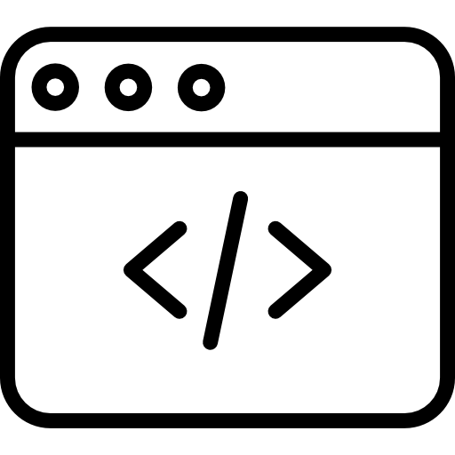

I'm Laura
a programmer living in the Rocky Mountains.


I've been traveling the world, learning about new cultures and myself. Now settled in Canada, I am looking for employment opportunities that give me the chance to evolve and use my unique skillset.

My first experience with Programming was simple commands in MS DOS with 12, when my brothers new computer wouldn't run my favourite game anymore (The Settlers II, if you really wanna know). With 14 I taught myself HTML so I could customise my MySpace Page (but really, who did not?). Growing up only hearing male names in connection with Programming and Software Egnineering, it never occured to me, that I could actually do this professionally. Here I am, in my 30s, learning Python, SQL, HTML and CSS (so far) because I realised, that is what I wanna do and what I am good at.
Already in highschool, I always had a thing for statistics. Investigating different graphs and putting them all together as a story became my favourite thing during the social economy class. And Statics my favourite lecture during my time in university. From an internship in quantitaive research in a market research company (Katar Added Values) to Multiplatform Content Analyst for brands like Nickeloden, Comedy Central and MTV at Viacom International Media Networks (now Paramount): analysing data and transforming it into a story is one of my favourite things to do. Plus: I'm really good at it!
Have an exciting employment opportunity for me? Want to hear more about my experience?
Let's talk!